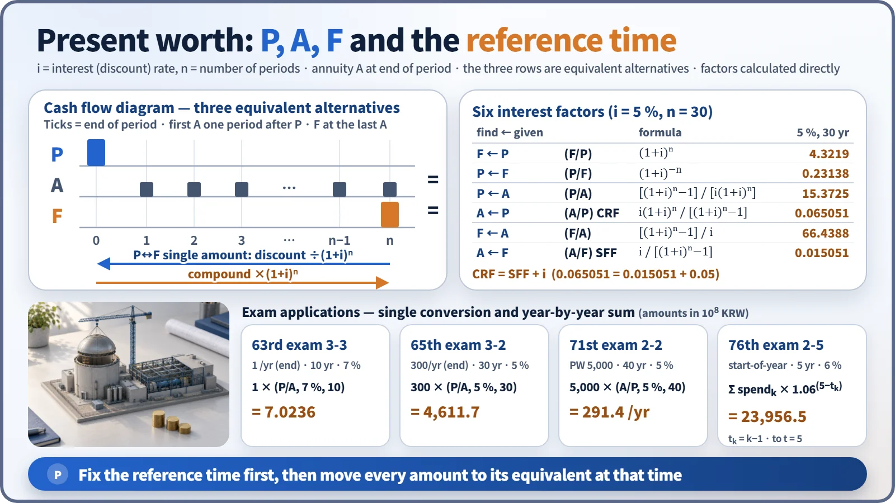
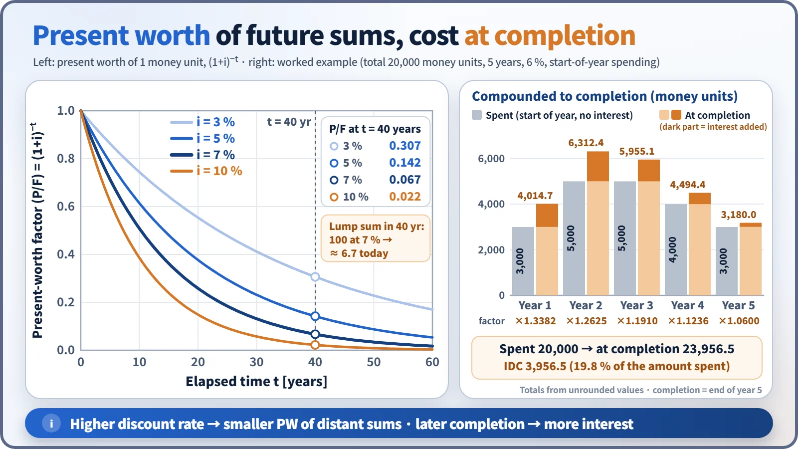
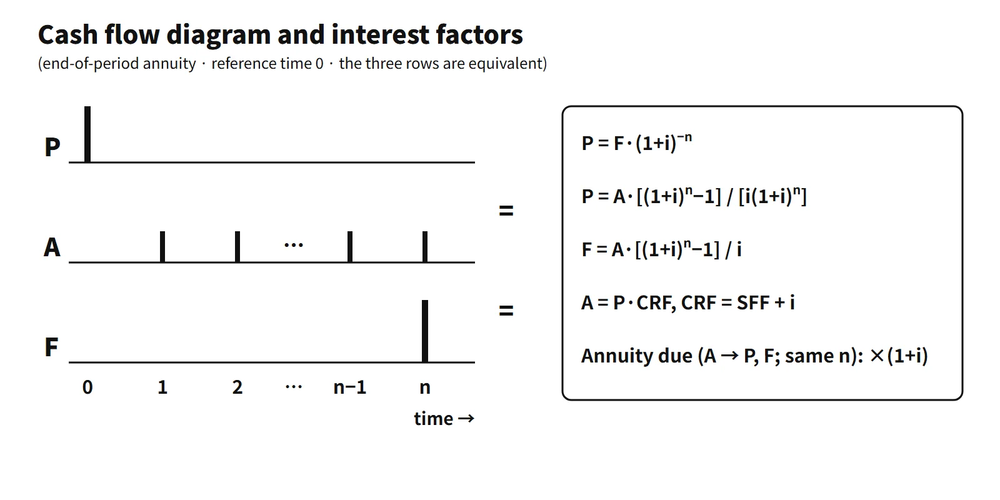

Policy, Economics & Reactor Types · C-PE-004
Present Worth and Engineering Economics — Solving Decommissioning Funds, Interest During Construction and Levelized Cost with the Six Interest Factors
Move every cash flow to one reference time: the factor formulas, the end-of-period convention, and worked calculations for decommissioning funds and construction cost at completion.
Present worth (PW) is a future amount discounted at an interest (discount) rate i to its equivalent amount at the reference time: P = F/(1+i)ⁿ.
The same sum is worth different amounts at different times (the time value of money). Cash flows at different times can therefore be added or compared only after they have been moved to the same reference time. This is equivalence.
Principle and mechanism
The cash flow diagram and the six interest factors

| Factor | Symbol | Formula | 5 %, 30 years |
|---|---|---|---|
| Single-payment compound amount | (F/P,i,n) | (1+i)ⁿ | 4.3219 |
| Single-payment present worth | (P/F,i,n) | (1+i)−n | 0.23138 |
| Uniform-series present worth | (P/A,i,n) | [(1+i)ⁿ−1]/[i(1+i)ⁿ] | 15.3725 |
| Capital recovery (CRF) | (A/P,i,n) | i(1+i)ⁿ/[(1+i)ⁿ−1] | 0.065051 |
| Uniform-series compound amount | (F/A,i,n) | [(1+i)ⁿ−1]/i | 66.4388 |
| Sinking fund (SFF) | (A/F,i,n) | i/[(1+i)ⁿ−1] | 0.015051 |
- Convention: an annuity A occurs at the end of each period; P is one period before the first A, and F is at the same time as the last A. If the payments occur at the start of each period (annuity due), multiply by (1+i) when finding P or F for the same A, and divide by (1+i) when finding A from a given P or F.
- P, A and F in the cash flow diagram are equivalent alternatives. It does not mean one project pays or receives all three.
- Relation: (A/P) = (A/F) + i. To recover capital you must pay the principal accumulation (A/F) plus interest (i) every year. As n→∞, (P/A)→1/i.
- State the reference time. A "present worth at completion" is, strictly, the equivalent amount obtained by compounding spending forward to the completion date (a future worth). Present worth is a value discounted back to the reference time, so check first in which direction you are moving the amounts.
A feel for the size of discount factors

The present worth of 1 unit of money 40 years from now is 0.307 at 3 %, 0.142 at 5 %, 0.067 at 7 % and 0.022 at 10 %. The higher the discount rate, the smaller distant costs and benefits become (fuel savings, decommissioning cost). Construction money spent now, on the other hand, stays as it is. This is why sources with large up-front investment, like nuclear, are sensitive to the discount rate.
Inflation: nominal and real
- Fisher relation: (1+in) = (1+ir)(1+f). With 7 % nominal and 2 % inflation, the real rate ir = 1.07/1.02 − 1 = 4.90 %. Do not simply subtract and use 5 %.
- Consistency principle: use the nominal discount rate for nominal (current-price) cash flows and the real discount rate for constant-price (real) cash flows. The OECD/NEA-IEA 2020 LCOE uses constant 2018 USD and real rates of 3, 7 and 10 %.
- Levelizing escalation: if a year-0 price A₀ rises by g each year, the levelizing factor = CRF(r,n) × Σ[(1+g)/(1+r)]ᵗ. With r = 7 %, g = 2 % and n = 60, it is 1.371.
Investment criteria: NPV, IRR and payback
As an example, invest 6 (money units) up front and receive 1 at the end of each year for 10 years, with a minimum attractive rate of return (MARR) of 7 %.
- NPV = −6 + 1×7.0236 = +1.024. It is non-negative, so accept.
- IRR: solving NPV = 0 for i, (P/A,i,10) = 6 gives 10.56 %. It exceeds the 7 % MARR, so accept.
- Payback: the simple payback is 6 years. For the discounted payback, the cumulative present worth is 5.971 at year 8 and 6.515 at year 9, so the investment is recovered in year 9.
- Payback ignores cash flows after recovery. IRR can reverse the ranking when comparing mutually exclusive alternatives. Alternative selection is therefore based on NPV or incremental analysis.
Deriving the levelized cost
The levelized cost LC is the constant unit price at which "the present worth of revenue sold at LC = the present worth of costs".
Σ LC·Eₜ(1+r)−t = Σ Cₜ(1+r)−t → LC = Σ Cₜ(1+r)−t / Σ Eₜ(1+r)−t
If Eₜ = E is constant and the investment I (including IDC) is placed at the start of operation, the capital cost per unit is I × CRF(r,n)/E. For example, 2,758 USD/kWe × 0.0712 ÷ 7.446 MWh/kW = 26.4 USD/MWh.
Levelized fuel cost and lead and lag times
Fuel costs are spent before loading (lead: concentrate, conversion, enrichment, fabrication), while electricity is produced over several years after loading. Back-end costs (storage, disposal) are paid with a delay (lag) after discharge. Discounting each payment at its actual time makes lead items grow by (1+r)lead (inventory carrying charge) and lag items shrink by (1+r)−lag.
The example assumptions are: a cost of 1,663 USD per kgU (uranium 848, conversion 116, enrichment 399, fabrication 300) spent 2.0, 1.5, 1.0 and 0.5 years before loading; burnup 45 GWd/tU and thermal efficiency 33 % (356.4 MWh/kgU), generated uniformly over 4.5 years; r = 7 %.
- Unit cost ignoring time value: 1,663 ÷ 356.4 = 4.67 USD/MWh
- Cost equivalent at loading: 848×1.07² + 116×1.071.5 + 399×1.07 + 300×1.070.5 = 1,836 USD
- Present worth of generation: 356.4 × [1 − e^(−4.5·ln 1.07)]/(4.5·ln 1.07) = 307.3 MWh
- Levelized fuel cost = 1,836 ÷ 307.3 = 5.98 USD/MWh (about +28 %)
- If back-end costs are paid 5 years after discharge, their present worth is 1.07−9.5 = 0.526 times.
What it means in a plant
- Interest during construction (IDC): the increase from compounding construction-period spending to the start of operation. Construction delays raise IDC, and the capital cost per unit rises with it through the CRF.
- Decommissioning funding: the decommissioning cost decades ahead is funded evenly during operation. The annual contribution differs greatly depending on whether it is based on the future requirement (sinking fund, A/F) or on the present worth (capital recovery, A/P). The provision is carried at the present value of future spending.
- Source selection: as the discount rate rises, capital-intensive nuclear is disadvantaged. Plot the cost present worth (or LCOE) as a function of the discount rate and find the crossover rate r*. In a model using one set of OECD/NEA-IEA 2020 country inputs, the nuclear–coal r* is about 13.9 % (for that set of assumptions only).
- Long-term operation and capital investment decisions: steam generator replacement or long-term operation investments are also judged by NPV over the remaining life.
Methodology reference
- OECD/NEA-IEA Projected Costs of Generating Electricity 2020: uses real discount rates of 3, 7 and 10 % and an LCOE formula with discounted generation in the denominator.
- Decommissioning provisions are measured at the present value of the expected future spending.
Easily confused pairs
| A | B | |
|---|---|---|
| A/P vs A/F | Recover a present P over n years (with interest) | Accumulate a future F |
| End-of-period vs annuity due | First payment one period later | First payment at the reference time, ×(1+i) |
| Nominal vs real discount rate | For current-price cash flows | For constant-price cash flows, converted with Fisher |
| NPV vs IRR | Amount-based, the basis for comparing alternatives | Ratio-based, ranking can reverse for mutually exclusive alternatives |
| Simple vs discounted payback | Ignores time value | Judged by cumulative present worth, longer |
Worked calculations
All amounts below are in arbitrary money units.
- Present worth of 10 years of revenue: 1 at each year-end for 10 years, 7 %. P = 1×(P/A,7 %,10) = 7.0236.
- Present worth of decommissioning fund contributions: 300 at each year-end for 30 years, 5 %, referenced to the end of this year.
- First contribution one year later (standard reading): P = 300×15.3725 = 4,611.7
- First contribution at the end of this year itself: 4,611.7×1.05 = 4,842.3
- State which reading is used. The accumulated total after 30 years is 300×66.4388 = 19,931.7.
- Annual decommissioning contribution: present worth 5,000, 40 years, 5 %. A = 5,000×(A/P,5 %,40) = 5,000×0.058278 = 291.4 per year. If 5,000 is the amount needed in 40 years, A/F gives 41.4 per year; the difference of 250 is 5,000×i.
- Construction cost at completion: 6 %, spending at the start of each year, completion = end of year 5.
- 3,000×1.06⁵ = 4,014.7, 5,000×1.06⁴ = 6,312.4, 5,000×1.06³ = 5,955.1, 4,000×1.06² = 4,494.4, 3,000×1.06 = 3,180.0
- Total 23,956.5, IDC 3,956.5 (19.8 %)
Key points at a glance
- Definition: a future amount converted to its equivalent at the reference time at discount rate i, P = F/(1+i)ⁿ.
- Basis: the time value of money (interest, opportunity cost, risk) → amounts at different times are compared only after moving them to the same time.
- Uniform-series present worth: P = A·[(1+i)ⁿ−1]/[i(1+i)ⁿ], with A paid at the end of each period.
- Reciprocal relation: CRF (A/P) = i(1+i)ⁿ/[(1+i)ⁿ−1] = SFF (A/F) + i.
- Example: 1 at each year-end for 10 years at 7 % → present worth 7.02.
- Applications: interest during construction (compounding to completion), decommissioning funds, levelized generation cost, NPV and IRR.
- Cautions: match nominal and real discount rates (Fisher), distinguish end-of-period from start-of-period payments, fix the reference time, and check whether a given amount is a present worth (use A/P) or a future requirement (use A/F); a higher discount rate disadvantages capital-intensive nuclear.
